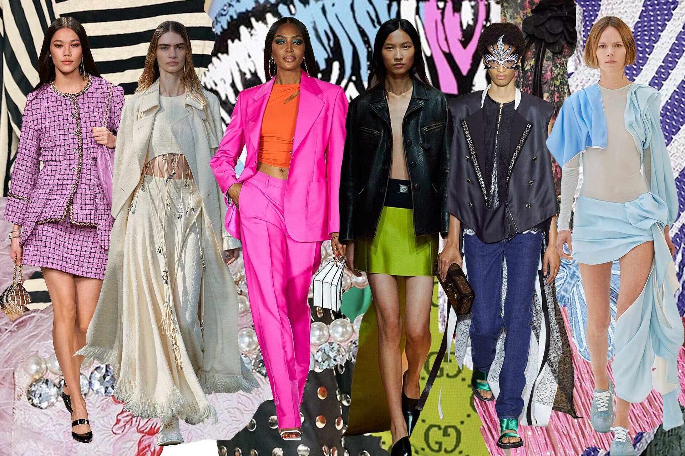
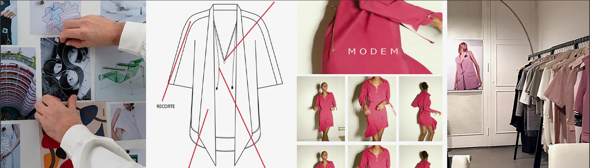
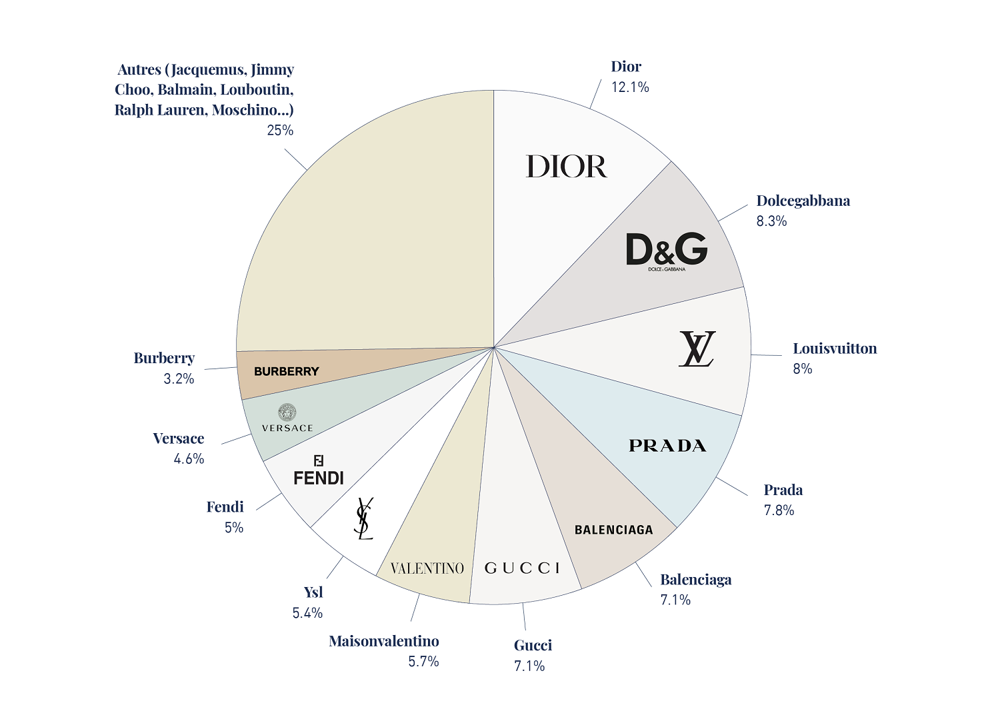

Desfiles destacados
Los desfiles destacados no solo son una vitrina para las últimas colecciones; son experiencias artísticas que fusionan moda, cultura y tecnología. Cada uno de estos eventos ha aportado algo único al mundo de la moda, dejando una marca indeleble en la historia y continuando inspirando a futuras generaciones de diseñadores y amantes del estilo.
Ferias de moda
El color es el primer paso para darle un giro renovado a tu armario en 2025. Estos son los tonos que dominarán la próxima temporada, según las pasarelas de primavera-verano. Estudia su manual de uso al pie de la letra y resolverás con estilo el enigma del qué llevar.
Premios y reconocimientos
- Acceso a recomendaciones personalizadas.
- Contribuir al desarrollo de un catálogo más relevante.
- Interacción con otros marcas de ropas.
¿Cuero natural o cuero vegano, ¿qué es más sostenible?
TTodos los materiales y procesos productivos están bajo escrutinio, incluyendo el cuero y todas sus alternativas. De ahí el debate en cuanto a la sostenibilidad de lo que fue bien recibido en un primer momento bajo el nombre de ‘cuero vegano’ como solución a los problemas del ‘cuero natural’.
Una de las Marcas que Saldra en 2025¿ Una de las Marcas que Saldra en 2025?
¿15 innovaciones que cambiarán el futuro de la moda?
Actividades locales
1. Dior: 12.1%
2. Dolce & Gabbana: 8.3%
3. Louis Vuitton: 8%
4. Prada: 7.8%
5. Balenciaga: 7.1%
6. Gucci: 7.1%
7. Valentino: 5.7%
8. Saint Laurent: 5.4%
9. Fendi: 5%
10. Versace: 4.6%
1. tipos de Marcas mas Polulares?
Todas las marcas mas Polulares son Dior, Gucci, Louis Vuitton, Prada, Saint Laurent, Balenciaga, Valentino?.
2. ¿Jennifer Lopez terminó el año con estilo en un look de baggy jeans y botas de suela track a los 50?
No, pero tu participación ayudará a mejorar las recomendaciones.
3. ¿Los vestidos con corte drapeado son la tendencia definitiva para este 2025?
"Resultados" de nuestro sitio web".

1. ¿Marcas de Ropas Balenciaga?
Balenciaga, la casa de moda es conocida por traspasar los límites con formas esculturales en tejidos técnicos.

2. ¿Marca de Ropas Louis Vuitton?
Louis Vuitton ha sido sinónimo de diseño único, innovación técnica y artesanía, valores que siguen vigentes hoy en día.

3. ¿Marca de Ropas Gucci?
Pide tus regalos online y recógelos en tu boutique Gucci preferida.